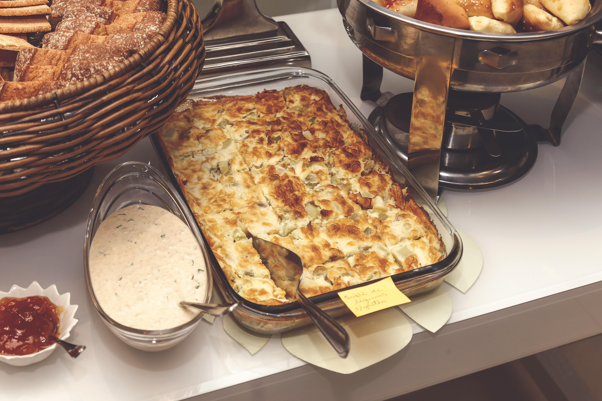

Lasanha italiana

Descrição
Ingredientes
- 500g de carne moída
- 250g de massa para lasanha
- 300g de queijo muçarela
- 200g de molho de tomate
- 1 cebola picada
- 2 dentes de alho picados
- Sal e pimenta a gosto
- Queijo parmesão ralado para gratinar
- 1 colher de sopa de azeite
- 1 colher de chá de orégano
- 1 folha de louro
Etapas
- Pré-aqueça o forno a 180°C.
- Em uma panela, cozinhe a carne moída até dourar.
- Adicione o molho de tomate e deixe cozinhar por 10 minutos.
- Monte a lasanha em uma travessa, alternando camadas de massa, carne e queijo.
- Leve ao forno por 30 minutos ou até o queijo derreter e dourar.
Home